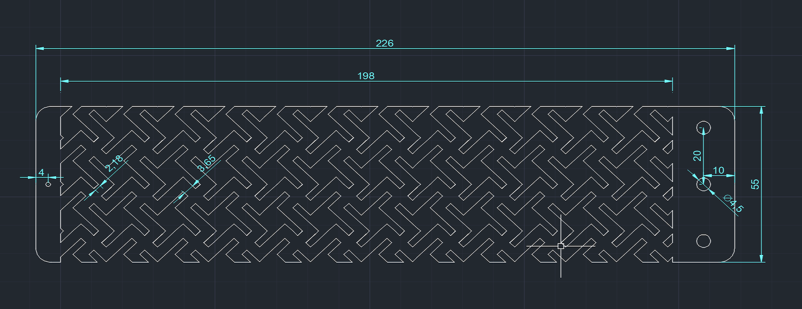
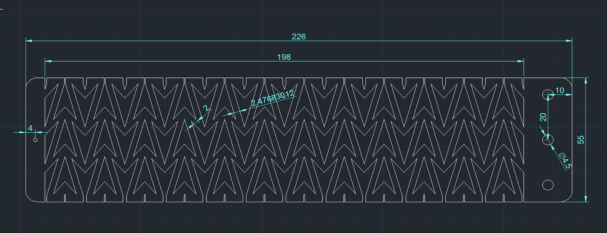
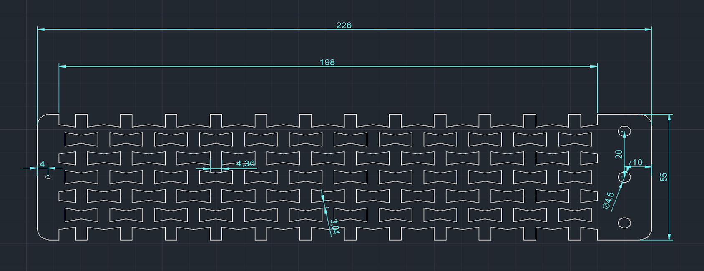
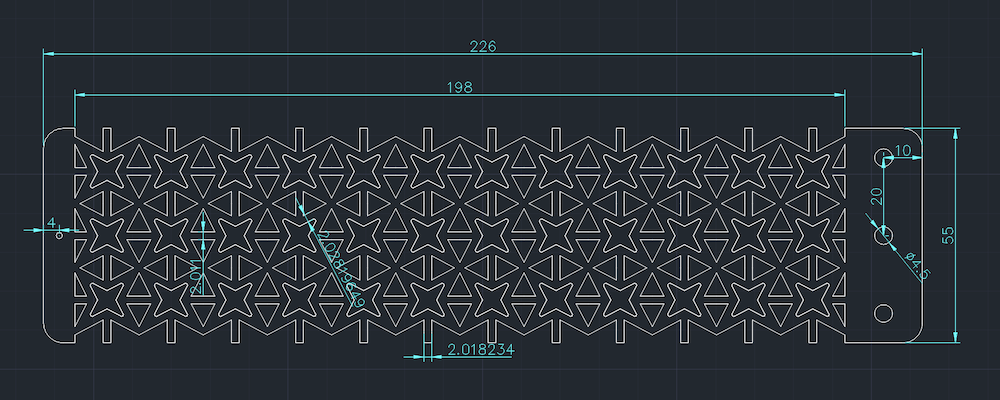
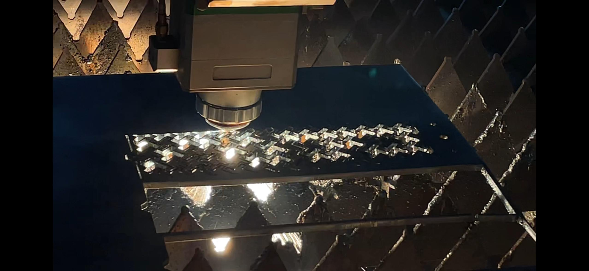
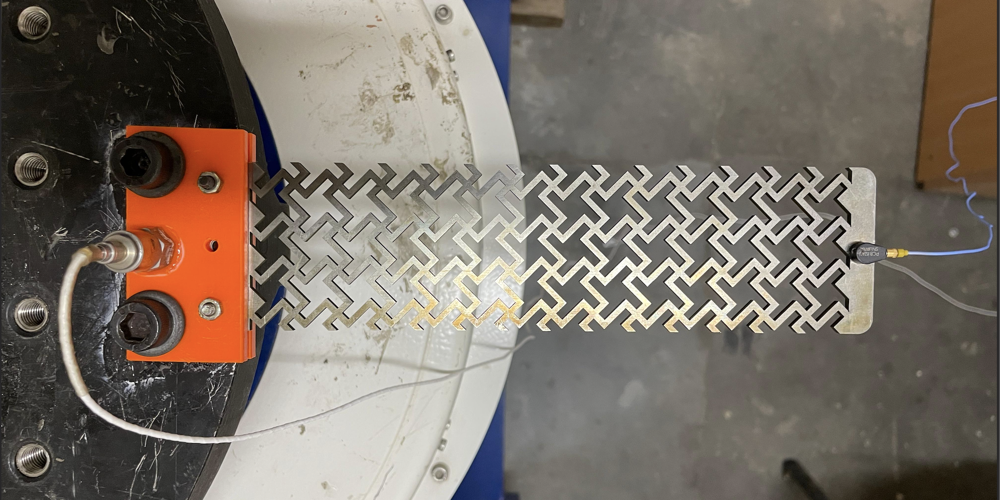
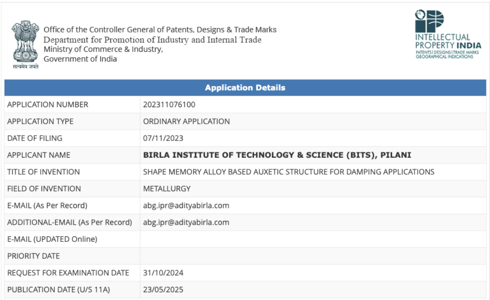
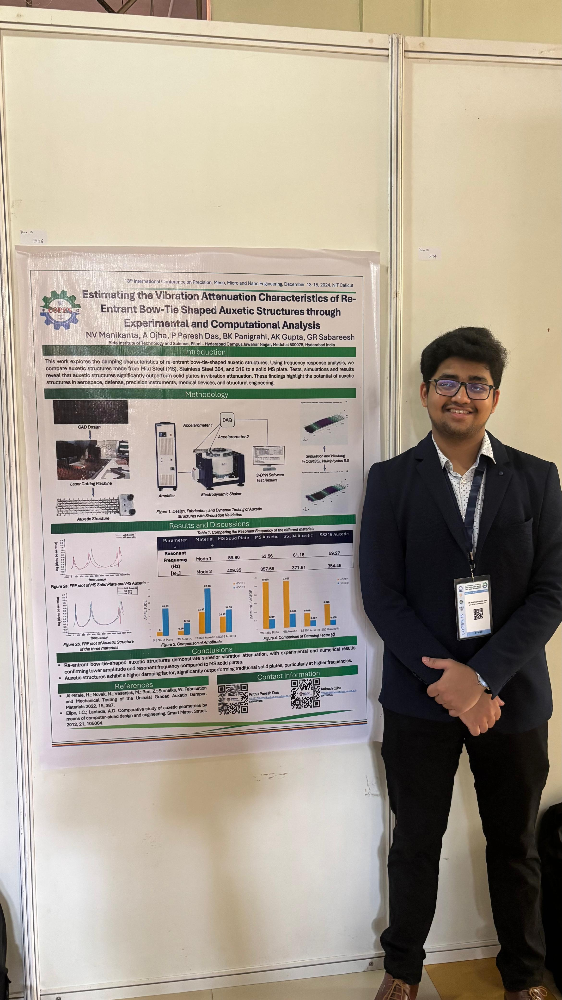

Auxetic metamaterials derive their unique performance from geometry rather than chemistry, expanding laterally when stretched (a negative Poisson's ratio). This project spans the complete design loop—from unit-cell parameterization and Finite Element Analysis (FEA) to precision laser machining of superelastic shape-memory alloys (NiTiNOL) and dynamic vibration testing.
- Topologies: Modeled mass-normalized negative Poisson's ratio geometries (Bow-tie, Double Arrowhead, Star Honeycomb).
- Fabrication: Laser-machined superelastic NiTiNOL sheets, analyzing heat-affected zone (HAZ) effects.
- Dynamic Testing: Built an electrodynamic shaker setup with dual accelerometers for excitation sweeps (10–1500 Hz).
Up to 2× higher damping response in Bow-tie topologies compared to solid plates.
Supported by one Indian patent application and two technical conference publications.




Topologies & Materials
- Bow-tie, Double Arrowhead, and Star Honeycomb geometries
- Stainless Steel, Mild Steel, and superelastic NiTiNOL
- Mass-normalized specimen designs
Vibration & FEA
- Controlled sinusoidal excitation (10–1500 Hz)
- Dual accelerometer FRF response measurement
- FEA-based Poisson's ratio computation
Material Analytics
- DSC phase-transformation temp sweeps
- EDS & FE-SEM microstructural analytics
- Laser Heat Affected Zone (HAZ) correction




Test-specimen holder
A dedicated holder to grip the auxetic samples squarely in the UTM so the measured response reflects the lattice, not the fixturing.
Demonstrated approximately 40% vibration reduction relative to solid plates and 2× damping enhancement in NiTi Bow-tie topologies. Supported two conference papers, one submitted journal manuscript, and an Indian patent application.